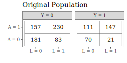
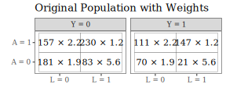
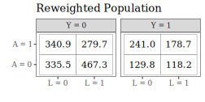

Marginal Structural Models
Notes on Marginal Structural Models and Causal Inference in Epidemiology by James M. Robins, Miguel Ángel Hernán, and Babette Brumback (2000), Epidemiology
https://doi.org/10.1097/00001648-200009000-00011
Introduction
The key problem this paper addresses is the bias induced by time-dependent confounders that are also affected by previous treatment — which are handled by the introduction of marginal structural models that can be consistently estimated using inverse-probability-of-treatment weighted (IPTW) estimators.
Definition. Time-dependent confounders are covariates that are a risk factor for, or predictor of, the event of interest and also predicts subsequent exposure.
We are particularly interested in time-dependent confounders that are also affected or predicted by past exposure history (Condition 2).
Time-Dependent Confounding
Consider a follow-up study of HIV-infected patients. Let \(A_k\) be the dose of the treatment or exposure of interest, say zidovudine (AZT) on the \(k\)th day since start of follow-up. Let \(Y\) be a dichotomous outcome of interest (for example, \(Y = 1\) if HIV RNA is not detectable in the blood and 0 otherwise) measured at end of follow-up on day \(K+1\). Our goal is to estimate the time-dependent treatment \(A_k\) on the outcome \(Y\).
Let \(L_k\) represent the vector of all measured risk factors on day \(k\) for the outcome such as age, CD4 lymphocyte count, white blood count, hematocrit, diagnosis of AIDS, and presence of absence of symptoms and opportunistic infections. Let \(U_k\) represent the value(s) on day \(k\) of all unmeasured causal risk factors for \(Y\).

Before diving immediately into how to address time-varying confounding that is affected by antecedent exposures, we establish some preliminary findings in the setting of point-treatment studies.


I think Robins, Hernán, and Brumback summarize the problem with time-varying confounders quite clearly in section 7.1:
“… Standard regression methods adjust for covariates by including them in the model as regressors. These standard methods may fail to adjust appropriately for confounding due to measured confounders \(L_k\) when treatment is time varying because (1) \(L_k\) may be a confounder for later treatment and thus must be adjusted for, but (2) may also be affected by earlier treatment and thus should not be adjusted for by standard methods. A solution to this conundrum is to adjust for the time-dependent covariates \(L_k\) by using them to calculate the weights \(sw_i\) rather than by adding \(L_k\) to the regression model as regressors.”
Background — Counterfactuals in Point-Treatment Studies
In an effort to help orient the readers, the authors provide some basic background on causal inference in point-treatment studies (Figures 2a-2c) to help keep us all grounded before moving on to more complicated settings.
Through this section (\(\S2\)) the authors contrast crude measures with causal measures explaining that the causal measures will equal the crude measures when the analysis is unconfounded.
\[cRD = Pr[Y = 1 | A_0 = 1] - Pr[Y = 1 | A_0 = 0] \quad \text{\small (Crude Risk Difference)}\] \[cRR = Pr[Y = 1 | A_0 = 1]/Pr[Y = 1 | A_0 = 0] \quad \text{\small (Crude Risk Ratio)}\] \[cOR = \frac{Pr[Y = 1 | A_0 = 1]/Pr[Y=1 | A_0 = 0]}{Pr[Y=0 | A_0 = 1]/Pr[Y=0 | A_0 = 0]} \quad \text{\small (Crude Odds Ratio)}\]
\[Pr[Y_{a_0 = 1} = 1] - Pr[Y_{a_0 = 0} = 1] \quad \text{\small (Causal Risk Difference)}\] \[Pr[Y_{a_0 = 1} = 1]/Pr[Y_{a_0 = 0} = 1] \quad \text{\small (Causal Risk Ratio)}\] \[\frac{Pr[Y_{a_0 = 1} = 1]/Pr[Y_{a_0 = 0} = 1]}{Pr[Y_{a_0=1}=0]/Pr[Y_{a_0=0} = 0]} \quad \text{\small (Causal Risk Ratio)}\]
Note that the way I’ve written the odds ratios is to make the structure of them obvious as ratios of odds, but of course one can re-express any fraction written \(\displaystyle \frac{a / b}{c / d} = \frac{a d}{b c}\), which is how they’re presented in the paper.
An important point they make is that because of the possibility of effect modification, the population causal parameter need not be the same as its estimate in a particular stratum of measured risk factors even if the treatment is unconfounded.
To estimate these quantities of interest, we might fit linear, exponential, and logistic models depending on expert knowledge about the nature of the data being considered (and what type of exposure-response curve we expect):
\[Pr[Y_{a_0} = 1] = \phi_0 + \phi_1 a_0\] \[\log Pr[Y_{a_0} = 1] = \theta_0 + \theta_1 a_0\] \[\text{logit} Pr[Y_{a_0} = 1] = \beta_0 + \beta_1 a_0\]
Interpreting, the causal RD is \(\phi_1\), the causal RR is \(e^{\theta_1}\), and the causal OR is \(e^{\beta_1}\).
These models are described as marginal because they model the marginal distribution of the counterfactual random variables \(Y_{a_0=1}\) and \(Y_{a_0=1}\) rather than the joint distribution (as in, they do not model \(\text{cor}(Y_{a_0=1}, Y_{a_0=0})\)). They are said to be structural because they model the probabilities of counterfactual variables (apparently models for counterfactual variables are often called structural in the econometrics and social science literature).
I’m a little confused about their claim that these are saturated models: they say that they’re saturated because each model has two unknown parameters and places no restriction on the probabilities for \(Y_{a_0 = 1}\) and \(Y_{a_0 = 0}\). I guess I’m just used to a different definition of saturated in which saturation refers to the model having as many parameters as it has data points, which does not feel like it’s necessarily true here.
No Unmeasured Confounders
Next a claim is introduced: if we weight the observations by \(w_i = 1/Pr[A_0 = a_{0i} | L_0 = l_{0i}]\) where \(l_{0i}\) and \(a_{0i}\) are the measured covariates and exposures for subject \(i\), then we should recover unbiased estimates of the causal quantities of interest.
A rough sketch of why this should work is presented that rests on two additional claims:
- In the constructed pseudopopulation, \(A_0\) should be unconfounded by the measured covariates \(L_0\).
- \(Pr(Y_{a_0=1} = 1)\) and \(Pr(Y_{a_0=1} = 0)\) are the same as in the true study population so that the causal RD, RR, and OR are the same in both populations.
Proof of 1. We want to show that \[Pr^W(A = a | L = l) \stackrel{claim}{=} Pr^W(A = a),\] where \(Pr^W\) refers to probability in the reweighted pseudopopulation.
I will only show this for the case where both \(A\) and \(L\) are dichotomous.
First, we can establish that \[Pr^W(A = a | L = l) = \frac{N_{(A = a, L =l)} w}{\sum_{i \colon L_i = l} w_i},\] where \(w = 1/Pr(A = a|L=l)\) is a scalar-value and
\[w_i = \left\{ \begin{array}{ll} 1/Pr(A=1|L=l) & \text{ if } A_i = 1 \\ 1/Pr(A=0|L=l) & \text{ if } A_i = 0 \end{array}\right.\]
where \(N_{(A=a,L=l)} \stackrel{\text{def}}{=} \sum_{i \colon a_i = a, l_i = l} 1\).
Letting \(w' = 1/Pr(A = 1-a | L=l)\), then we have that:
\[Pr^W(A = a | L = l) = \frac{N_{(A=a, L=l)}w}{N_{(A=a,L=l)}w + N_{(A=1-a,L=l)}w'}.\]
Substituting that \(Pr(A = a | L = l)\) is estimated by \(N_{(A=a,L=l)}/N_{(L=l)}\), we have that
\[Pr^W(A = a | L = l) = \frac{\cancel{N_{(A=a, L=l)}} \frac{N_{(L=l)}}{\cancel{N_{(A=a,L=l)}}}}{ \cancel{N_{(A=a,L=l)}} \frac{N_{(L=l)}}{\cancel{N_{(A=a,L=l)}}} + \cancel{N_{(A=1-a,L=l)}} \frac{N_{(L=l)}}{\cancel{N_{(A=1-a,L=l)}}}}\] \[ = \frac{N_{(L=l)}}{2 N_{(L=l)}}\] \[ = \frac{1}{2}\]
In general, if \(L\) took on more than just two values, we find that the probability that \(A=a\) is the inverse of the number of levels of \(L\), which is independent of any single value that \(L\) could take on.
\(\square\)
Thinking about 2. It’s not entirely clear to me why they say that \(Pr(Y=1|A)\) remains unchanged comparing the weighted vs. unweighted populations.
If we consider the 3-way tables necessary in the situation when \(A\), \(L\), and \(Y\) are each dichotomous, we’re looking at something like this (for a simulated study of 1,000 participants):

After applying inverse probability of treatment weights:


In general, we would write that the estimate of \(Pr^W(Y = 1 | A = 1)\) is given by:
\[\quad \frac{N_{\tiny (Y=1, A=1, L=1)} w_{\tiny (A=1,L=1)} + N_{\tiny (Y=1, A=1, L=0)}w_{\tiny (A=1,L=0)}}{ N_{\tiny (Y=1, A=1, L=1)} w_{\tiny (A=1,L=1)} + N_{\tiny (Y=1, A=1, L=0)}w_{\tiny (A=1,L=0)} + N_{\tiny (Y=0, A=1, L=1)} w_{\tiny (A=1,L=1)} + N_{\tiny (Y=0, A=1, L=0)}w_{\tiny (A=1,L=0)}}\]
where \(w_{(A=a|L=l)} = 1/Pr(A=a|L=l)\). The previous expression is only equal to \(Pr(Y=1 | A=1)\) in the unweighted population if \(w_{(A=1,L=0)} = w_{(A=1,L=1)}\) (which we will denote \(w\) in the next line to follow) since we could then factor:
\[ Pr^W(Y = 1 | A = 1) = \frac{\cancel{w} (N_{\tiny (Y=1,A=1,L=1)} + N_{\tiny (Y=1,A=1,L=0)})}{ \cancel{w} ( N_{\tiny (Y=1,A=1,L=1)} + N_{\tiny (Y=1,A=1,L=0)} + N_{\tiny (Y=0,A=1,L=1)} + N_{\tiny (Y=0,A=1,L=0)})}\] \[ = Pr(Y = 1 | A = 1) \quad \text{ as claimed.}\]